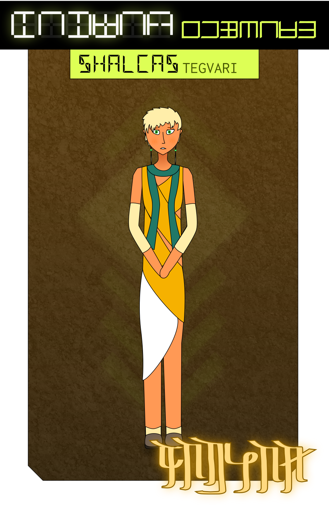

“How long has it been?”
“Nili, I don’t know. There’s no clocks in here.”
Niltar was huddled on the seat in the waiting room. “They’re going to leave us here. I fucking knew it. I fucking told you this would happen. They’re going to lock us up and we’re never getting out and—”
Livkir squeezed her arm. “Hey. Nili. Look at me. Just look at me, okay? Don’t go there. They’re just making us wait, that’s all, I promise.”
“You don’t fucking know that. You can’t fucking—”
“About an hour,” Shalcas interrupted.
Niltar stopped. “How the fuck do you know?”
“I spent a lot of time in places like this.” Shalcas held up his hand to cover a yawn. “All the underground stations, the lighting changes based on the time of day. So people can work here without ruining their sleep cycles.”
“You can tell from the lights?” Niltar demanded.
“How much time did you spend underground, exactly?” asked Livkir, eyebrows raised.
“I… a lot.” Shalcas fidgeted. “They… when they had us moved out of Varshal, they sent most of us on the Core Line. They said sending so many people at a time would bog down passenger rail for the rest of the planet something awful. I spent days getting on and off trains, sleeping and eating and showering in places like this.” He looked down. “I was only twelve.”
“That sounds awful.” Livkir put a hand on his shoulder. “Are you sure you’re okay being here?”
Shalcas gave him a strained smile. “I… I’ll manage. I have friends this time, right?” He squeezed his wrist nervously and glanced away.
“Hey.” Livkir took him by the shoulders. “You look like you could use a hug.”
Shalcas looked up and blushed. “I— that, um— that sounds— that—”
Livkir pulled him close and hugged him gently. Through his robes he could feel the boy’s bony frame; he was thinner than he was supposed to be, Livkir could tell. “You do have friends this time, Shay,” he said, patting him on the back. “And you’re gonna have another as soon as we find Cas. She’s gonna like you, I can tell already.”
“Th-thanks.” Shalcas withdrew reluctantly. “That’s— you’re really sweet, Livkir—”
“Liv, Shay.”
Shalcas flushed with embarassment. “Right. Sorry. Liv. You’re really sweet. Um. I don’t want you to feel like you have to take care of me? I don’t want to be a burden, I—”
Livkir punched him gently in the shoulder. “Hey, no. I deal with Niltar every day.”
“Fuck you!” Niltar yelled from across the room, where she was pacing again.
“Like you’re gonna have time after Cas gets her hands on you,” Livkir shot back, and turned back to Shalcas. “Seriously, man. You’re not even a little bit a burden, okay?”
“You’re really okay?” asked Shalcas. “You’ve— gosh, you’ve been so calm, you’re acting like none of this is bothering you, I—”
“One of my best friends is gone,” said Livkir, sitting back and staring at the ceiling. “Yeah, that bothers me, a lot. But we’re getting her back. We’re on the right track, I know it. So yeah. I’m okay. I could sit on hard benches for days if that’s what it took.”
“I wish I was that strong,” Shalcas murmured.
Livkir frowned. “It’s not like that. We all take things differently. Nili’s got ceshvol, she can barely get through a normal day on her own, but that doesn’t make her weak, right? She just needs different things. And has different things to offer. Like she is such a good artist, you know? I could never paint the way she does.” He grinned. “Or dress.”
Shalcas laughed weakly. “Come on, I bet you’d look great with a bare stomach and bright purple bra with— what’d hers have written on it?”
“‘Bitch,’” said Livkir.
“Mm-hm. Yes. A purple bra with ‘bitch’ on it. That’d suit you great.”
“You sure you don’t just want to see more skin from me?” Livkir teased.
Shalcas went bright red. “I—” he began, and stopped as the door to the waiting room opened.
“Comrades,” said a Shevran officer. “Please follow me.”
He led them down a narrow corridor and out to a train platform. A train was already decelerating into the depot.
“What is going on.” Niltar stopped dead in her tracks. “I’m not getting on that train. I’m not, you can’t make me, I—”
“You’re not going anywhere,” said the officer. “If you were being detained, I’d have been told.”
Livkir held Niltar tight. “Can we stop here? She’s had a really hard day, please don’t upset her any further—”
The officer nodded. “That won’t be a problem.”
The train slid to a silent halt, and the compartment began to pressurize. Livkir glanced around, taking in the scene. There were armed officers posted around the rail gate, where Talvas was standing with another woman. Section Head Shalmir, maybe?
The portway opened, a figure stepped out behind the rail gate—
“Cassil!” Niltar cried, and dashed towards the gate. The guards started to move towards her to intercept her.
“Whoa, whoa.” Talvas grabbed her arm as she approached, waving to the guards to stand down. “Hang tight, okay? We’ve got security procedure to follow.”
“Nili?” Cassil waved from behind the gate. “Is that you?”
“Cas!” Niltar wiped tears from her eyes. “Thank fuck. Thank fuck. You’re okay. Let me through, you fucking—”
An officer took hold of Cassil, who rolled her eyes as he scanned her chip. He motioned her forward, and handed a tablet to the other woman. “If you could sign off, Shalmir-tallas?”
The woman nodded, and passed the tablet back. “Bring her through.”
Alarms buzzed as the gate rolled back, and Cassil hesitantly stepped through. Talvas let go of Niltar and she ran forward, throwing her arms around Cassil, sobbing with relief.
Cassil held her tightly, kissing her forehead as the gate shut behind her. “I got you, Nili. It’s okay. I got you.”
She looked up, and glanced between Talvas and Shalmir. “Which one of you bitches is in charge here?” she asked.
Shalmir raised an eyebrow. “Language, comrade.”
Cassil stepped forward, just short of Shalmir’s personal space. “Why the fuck are my friends here? They did nothing wrong. You have no right—”
“They came of their own initiative, Comrade Cassil,” said Talvas gently. “You have loyal friends.”
Cassil glanced at her. “And who the fuck are you?”
“Shevran Commandant Talvas Tegvari, under Section Head Shalmir Tegvari.” Talvas inclined her head towards Shalmir. “Whom you’ve just met.”
“If you’re trying to intimidate me, either of you?” Cassil shook her head. “After the day I’ve had? I—”
“Comrade Cassil,” said Shalmir coolly. “You are free to return to your home. It would not be wise to jeopardize this through gratuitous insubordination.”
“She— she’s free? She can come back with us?” Niltar exclaimed.
“I am,” said Cassil, putting an arm around Niltar’s neck and fixing her eyes on Shalmir. “Nili, is it true? You came here on your own? They didn’t force you?”
“Yeah. Yeah, we did.”
Cassil nodded. “They’re also free to go, Comrade Shalmir?”
“They were never detained.”
Cassil’s posture relaxed, and she closed her eyes. “Okay. I— Okay. I’m sorry. It’s been a rough day.”
“I hope it has taught you the importance of maintaining discipline under fire, comrade,” said Shalmir, turning away. “Escort them back to the surface, commandant.”
“Yes, ma’am.” Talvas saluted.
“Cas!” Livkir ran up, dragging Shalcas behind him.
“Liv!” Cassil grinned and hugged him tight. “Dude. How the fuck did you get down here?”
“We just asked where you were and they took us.”
“That’s fucking weird. Hey, who’s—” She frowned at Shalcas. “I know you from somewhere, don’t I?”
“Hi!” Shalcas bobbed his head. “Yeah. Um. We worked on a project together? For—”
“Geography! Shalcas, right?” Cassil raised her eyebrows. “What are you doing here?”
“This man is the hero of the hour,” said Livkir proudly, putting an arm around Shalcas’ shoulders. “Shay’s the one who figured out who came for you. We wouldn’t have made it here without him!”
“That’s—” Shalcas laughed awkwardly. “I mean, I really only— I didn’t—”
“Damn, I’m gone for a couple days and Liv already has a boyfriend?”
Shalcas’ cheeks went beet red. “I— I—”
“I’m just teasing you.” Cassil patted him on the shoulder. “Welcome to the crew, Shay.”
“Comrades.” Talvas cleared her throat. “This is a very heartwarming reunion, but can we please bring it topside? I’m hoping I’ll be able to go home and sleep some time tonight.”
“Yeah. Yeah,” said Cassil. “Let’s. After you, commandant. Shay, you’re coming with us and we’re going to have dinner and drinks at my dorm. I don’t care how tired you are.”
“I—” Shalcas stammered. “I— yes, ma’am?”
“That’s the spirit,” said Livkir. “See? You’re gonna fit right in.”
